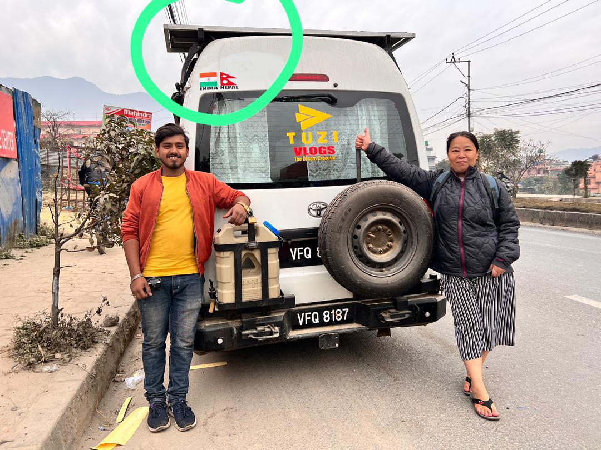

Real Story · 中文
有些路，是开过的；有些路，是贴在车身上的。
07/12/2023，我在 Kathmandu 遇见 Abhishek Baniya。 他是 Indian，但来到 Nepal 开了一间小小的 sticker shop： Aaradhya Sticker House。
我原本只是想处理一个很 practical 的事情： 帮 Toyotaki 做 country stickers，把已经经过的国家贴在 campervan 后面。
可是这个小任务，后来变得比我想象中更有意义。 因为贴纸不是普通装饰。 它们像是把旅程变成可以看见的记录。
一个国家，开过去是一回事。 贴在 Toyotaki 身上，又是另一回事。 它变成身份、路线、记忆，也变成别人一看到车尾就能读到的故事。
Abhishek 很认真地帮我设计，也给我关于 Tuzi Vlogs branding stickers 的建议。 他对细节、颜色、排列、贴法都有自己的想法。 他的店不只是做 sticker，而是把创意、手艺和服务放在一起。
当他把贴纸贴上 Toyotaki 的时候，我有一种感觉： 这辆 campervan 已经不是普通车了。 路，开始写在它身上。
Related Video · Tuzi Vlogs Archive
Aaradhya Sticker House.
This video preserves the meeting with Abhishek Baniya, the creative process at Aaradhya Sticker House, and the moment when country stickers became part of Toyotaki's road identity.
English Memory Summary
The route became visible.
On 07/12/2023, Tuzi met Abhishek Baniya at Aaradhya Sticker House in Kathmandu. Abhishek is Indian, but had come to Nepal to open his small sticker shop.
He helped Tuzi design and apply country stickers to the back of Toyotaki. At first, it seemed like a practical errand. But it became something more: the journey becoming visible.
A country crossed is one kind of memory. A country marked on the body of the campervan is another. Through the stickers, Toyotaki began to carry the route not only in mileage, but in visible identity.
Heart Statement
那一天，路开始贴在车身上。
每一个 sticker 都不是装饰。 它是一个国家，是一段路，是一次过境，是一层记忆。
Toyotaki 不是只载着我往前走。 它也开始把走过的世界，贴在自己身上。
The journey was no longer only behind me. It was now visible on Toyotaki.